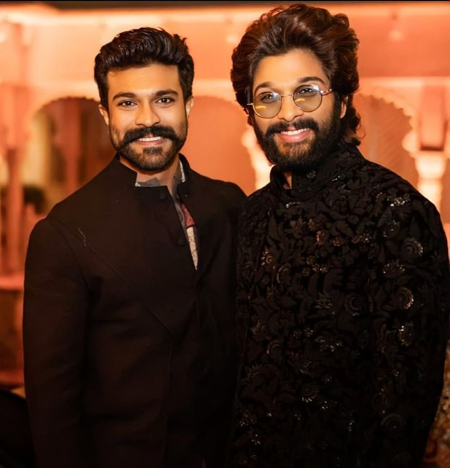
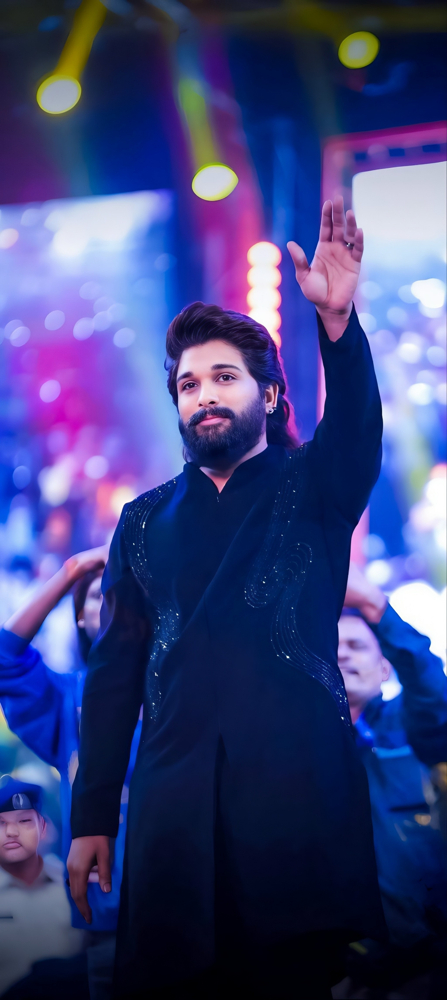

Allu Arjun is one of the most popular actors in the Indian film industry, especially in Telugu cinema. He was born on April 8, 1982, in Chennai, India. He comes from a well-known film family. His father is Allu Aravind, a famous film producer. His grandfather Allu Ramalingaiah was also a legendary actor. Allu Arjun completed his schooling in Chennai and later studied at MSR College in Hyderabad. From childhood, he was very interested in acting and dancing. He made his debut as a lead actor in the movie Gangotri in 2003. His performance in the film received good appreciation. Later, he became very famous with the movie Arya, which was a big success. His stylish acting and excellent dance skills made him very popular among youth. Because of his unique style, fans lovingly call him “Stylish Star.” He acted in many successful movies such as Bunny, Desamuduru, Julayi, and Sarrainodu. These movies helped him gain a huge fan following. Allu Arjun is well known for his energetic dance performances. Many people admire his dedication and hard work in films. He has received several awards for his acting talent. His film Pushpa: The Rise became a massive hit across India and internationally. The dialogue “Pushpa… Thaggede Le” became very famous among fans. For his outstanding performance in this film, he received many awards and appreciation. Apart from acting, Allu Arjun is also known for his humble and friendly nature. He often participates in charity and social activities. He inspires many young people who want to enter the film industry. His fans celebrate his birthday with great enthusiasm every year. He is married to Sneha Reddy, and they have two children. Allu Arjun continues to work hard and entertain audiences with his movies. He is considered one of the leading stars of Telugu cinema today. His style, acting talent, and dedication have made him a true icon in the Indian filmindustry.
Allu Arjun was born on April 8, 1982, in Chennai, Tamil Nadu, India. He was born into a well-known and respected film family in the Telugu film industry. His father, Allu Aravind, is a famous film producer who has produced many successful Telugu movies. His grandfather, Allu Ramalingaiah, was a legendary comedian and actor who appeared in hundreds of films. Growing up in such a family gave Allu Arjun early exposure to the world of cinema. From childhood, he was surrounded by film discussions, shooting locations, and creative environments. This atmosphere helped him develop a strong interest in movies and acting at a very young age. Allu Arjun spent most of his childhood in Chennai, where he completed his early schooling. Later, his family moved to Hyderabad, where he continued his education. During his school and college days, he was known as a lively and active student. He participated in many cultural activities, especially dance performances. Dancing became one of his greatest passions during his early life. He practiced different dance styles and worked hard to improve his skills. His dedication to dance later became one of his strongest talents in the film industry. As a child, Allu Arjun also had a small appearance in the film Vijetha, which gave him his first experience in front of the camera. Though it was only a brief role, it introduced him to the filmmaking process. Watching actors perform and observing film production increased his curiosity about cinema. His family members noticed his interest and supported his dream of becoming an actor. During his teenage years, Allu Arjun continued focusing on his studies while also developing his acting and dancing abilities. He completed his college education in Hyderabad. Along with education, he trained himself physically and mentally to prepare for a career in films. He watched many movies to learn about acting styles and screen presence. His passion, discipline, and hard work helped him build confidence. Allu Arjun’s early life played a very important role in shaping his personality and career. The influence of his film family, combined with his own dedication and interest, helped him prepare for the entertainment industry. His love for dance, acting, and cinema continued to grow with time. These early experiences later helped him become one of the most popular actors in Telugu cinema. Today, his journey from a young boy interested in films to a successful star inspires many young people who dream of entering the film industry.
Allu Arjun began his successful career in the Telugu film industry with dedication, talent, and hard work. He made his debut as a lead actor in the film Gangotri, directed by K. Raghavendra Rao. The movie introduced him to the audience and marked the beginning of his acting journey. Although it was his first film, he showed great potential and passion for acting. His performance attracted attention, and many people noticed his energy and screen presence. However, his real breakthrough came with the film Arya, directed by Sukumar. The film became a huge success and made Allu Arjun very popular among audiences. His unique acting style, expressive performance, and impressive dancing skills gained him a large fan following, especially among the youth. The success of Arya established him as a rising star in Telugu cinema. After the success of Arya, Allu Arjun continued acting in several successful films. He appeared in movies such as Bunny and Happy, which further increased his popularity. In 2007, he starred in the action film Desamuduru, directed by Puri Jagannadh. The movie became a commercial hit and proved his ability to perform powerful action roles. His energetic dance performances and stylish appearance made him stand out among other actors. In the following years, Allu Arjun continued to deliver many successful films. He acted in movies like Parugu, Arya 2, and Vedam. These films showcased his versatility as an actor. In Vedam, he played a different and challenging role, which received appreciation from critics and audiences. This film proved that he could perform both commercial and serious roles effectively. His career continued to grow with popular films such as Julayi, directed by Trivikram Srinivas. The movie was a major hit and became one of the most loved films of his career. Later, he starred in Race Gurram, which became a blockbuster and further strengthened his position as a leading actor. His comedy timing, action scenes, and dance performances in the film were highly appreciated. Allu Arjun continued his success with movies such as Sarrainodu and DJ: Duvvada Jagannadham. These films were commercially successful and increased his fan base even more. He became known as the “Stylish Star” because of his unique fashion sense and stylish acting. His fans admired not only his performances but also his energetic dance moves and dedication to fitness. Another important film in his career was Ala Vaikunthapurramuloo, which became one of the biggest hits in Telugu cinema. The songs, dialogues, and performances from the film became extremely popular. His role in the movie was praised for its charm and entertainment value. The success of the film made him one of the top actors in the industry. In 2021, Allu Arjun achieved nationwide fame with the film Pushpa: The Rise, directed by Sukumar. In this movie, he played the role of Pushpa Raj, a red sandalwood smuggler. His powerful acting, unique dialogue delivery, and intense performance impressed audiences across India and even internationally. The famous dialogue “Pushpa… Thaggede Le” became extremely popular and widely used by fans and on social media. For his outstanding performance in Pushpa: The Rise, Allu Arjun received several awards and recognition. Throughout his career, Allu Arjun has been known for his dedication, discipline, and passion for cinema. He works very hard to improve his acting, dancing, and physical fitness for every film. His ability to perform different types of roles has helped him remain successful for many years. Over time, he has built a huge fan following not only in Telugu-speaking states but also across India and abroad. Today, Allu Arjun is considered one of the biggest stars in the Telugu film industry. His journey from a debut actor to a national icon shows his hard work and determination. His films, performances, and style continue to entertain millions of fans. His career remains an inspiration for many young people who dream of becoming actors in the film industry.
Allu Arjun is not only known for his successful film career but also for his happy and balanced personal life. He was born on April 8, 1982, in Chennai, Tamil Nadu, India, into a well-known family connected to the Telugu film industry. His father, Allu Aravind, is a famous film producer, and his grandfather, Allu Ramalingaiah, was a legendary comedian in Telugu cinema. Growing up in such a family helped shape his personality and values from a young age. Allu Arjun is known to be a very family-oriented person. Even with his busy film schedule, he always spends time with his loved ones. His family plays an important role in supporting him in both his personal and professional life. He shares a strong bond with his parents and siblings and often expresses his love and respect for them in interviews and public events. His close relationship with his family has helped him remain grounded despite his fame and success. One of the most important moments in his personal life was his marriage to Sneha Reddy. They got married on March 6, 2011, in a grand ceremony attended by family members, friends, and many celebrities from the film industry. Sneha Reddy is known for her graceful personality and supportive nature. Their love story is admired by many fans, and they are often seen as one of the most loved celebrity couples in Telugu cinema. The couple has two children who bring great happiness to their family. Their son, Allu Ayaan, was born in 2014, and their daughter, Allu Arha, was born in 2016. Allu Arjun often shares photos and videos with his children on social media, showing the fun and loving moments they spend together. He is known to be a caring and playful father who enjoys spending time with his kids whenever he is free from film work. Apart from family life, Allu Arjun is also known for his disciplined lifestyle. He focuses a lot on fitness and health. To maintain his physical fitness for films, he follows a strict workout routine and balanced diet. His dedication to fitness inspires many young fans who admire his energetic performances and strong physique. He believes that maintaining good health is very important for a long and successful career in the film industry. Allu Arjun also has a deep interest in fashion and style. Because of his unique dressing sense and stylish appearance, fans call him the “Stylish Star.” He often experiments with different hairstyles, outfits, and looks, which become trends among young people. His sense of style has made him a fashion icon for many fans across India. In addition to his professional achievements, Allu Arjun is also involved in several charitable and social activities. He supports many social causes and has contributed to helping people during difficult times. He has donated money for disaster relief and medical assistance for people in need. He believes in using his fame and success to help society and support those who are less fortunate. His kind and generous nature has earned him respect not only as an actor but also as a responsible public figure. Allu Arjun also maintains a close connection with his fans. He often interacts with them through social media platforms and appreciates their love and support. His fans celebrate his birthday every year with great enthusiasm by organizing charity events and social service activities. He always thanks his fans for their continuous encouragement and considers them an important part of his journey. Despite being one of the biggest stars in the Telugu film industry, Allu Arjun is known for his humble and friendly personality. Many people who have worked with him describe him as polite, hardworking, and respectful. His positive attitude and dedication have helped him build strong relationships with colleagues and friends in the industry. Allu Arjun also enjoys traveling and spending time with his family during vacations. He likes exploring new places and experiencing different cultures. These moments help him relax and refresh his mind after long and busy shooting schedules. He often shares glimpses of these family trips on social media, which his fans enjoy seeing. Overall, the personal life of Allu Arjun reflects love, discipline, and strong family values. He successfully balances his responsibilities as an actor, husband, and father. His commitment to family, fitness, and social responsibility makes him a role model for many people. While he continues to achieve great success in his film career, his personal life remains an important source of happiness and strength for him.
Allu Arjun has built an impressive filmography in the Telugu film industry through his versatile acting, energetic dancing, and stylish screen presence. He made his debut as a lead actor with the film Gangotri, which introduced him to audiences and marked the beginning of his acting career. Although it was his first movie, it helped him gain recognition and opened doors for future opportunities. His second film Arya became a major breakthrough in his career. The movie was a huge commercial success and made him very popular among young audiences. His performance, dialogue delivery, and dance skills received great appreciation. Following this success, he acted in Bunny, which further strengthened his position as a promising young actor. In 2006, Allu Arjun appeared in Happy, a romantic drama that showcased his ability to perform emotional roles. The next year, he starred in Desamuduru, which became a big commercial hit. The film highlighted his action skills and energetic dance performances. In 2008, he acted in Parugu, a film that received positive reviews and appreciation from audiences. In 2009, Allu Arjun appeared in the sequel Arya 2, which further increased his popularity. The film was known for its music, stylish presentation, and strong performances. In 2010, he acted in the multi-starrer film Vedam. His role in this film was very different from his previous roles and earned him critical appreciation. He continued his film journey with Varudu and Badrinath. Although these films received mixed responses, they showed his willingness to experiment with different characters. In 2012, he achieved success with the action-comedy film Julayi, which became a major hit and entertained audiences with its humor and action sequences. In 2013, he acted in Iddarammayilatho, where his stylish appearance and dance numbers were widely appreciated. The following year, he starred in the blockbuster Race Gurram, which became one of the biggest hits of his career. His performance in the film was praised for its comedy, action, and entertainment value. In 2015, he appeared in S/O Satyamurthy, a family drama that highlighted emotional storytelling and strong performances. The next year, he starred in the action film Sarrainodu, which was a major commercial success. In 2017, he acted in DJ: Duvvada Jagannadham, where he played a dual-personality role that entertained audiences. Later, he appeared in Naa Peru Surya, Naa Illu India, a patriotic film in which he played the role of an army officer. In 2020, he starred in the blockbuster film Ala Vaikunthapurramuloo, which became one of the highest-grossing Telugu films and received tremendous love from audiences. In 2021, Allu Arjun achieved nationwide recognition with Pushpa: The Rise. His portrayal of Pushpa Raj became extremely popular, and the film gained massive success across India and internationally. The film’s dialogues, songs, and performances became cultural sensations. Overall, the filmography of Allu Arjun shows his growth as an actor and entertainer. From romantic roles to action characters and emotional performances, he has proved his versatility in many films. His dedication, style, and hard work have helped him create a strong place in the Telugu film industry and earn millions of fans around the world.
.jpg)
.jpg)

.jpg)

.jpg)